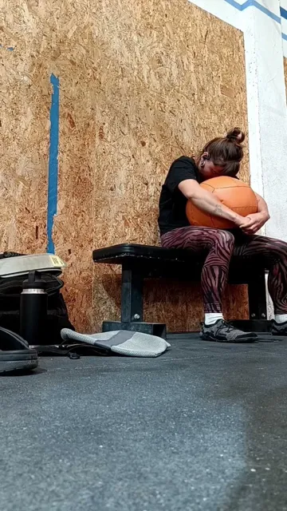
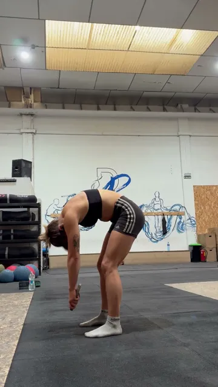
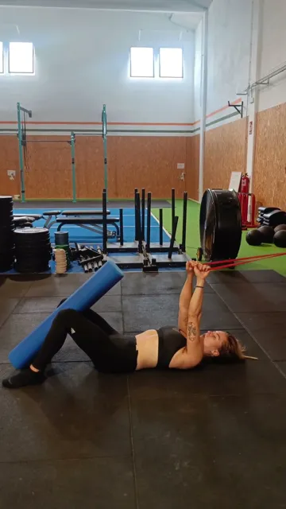
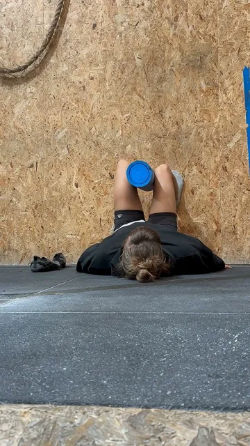
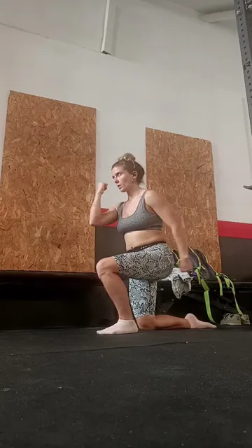
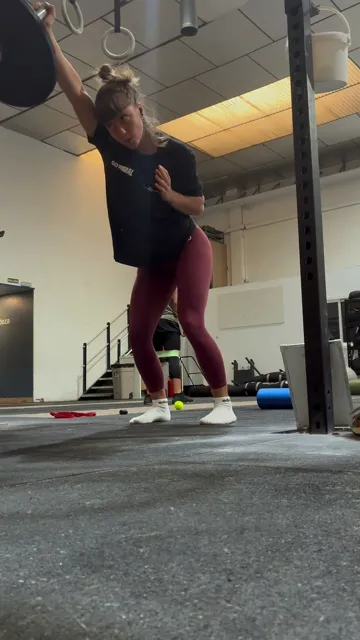
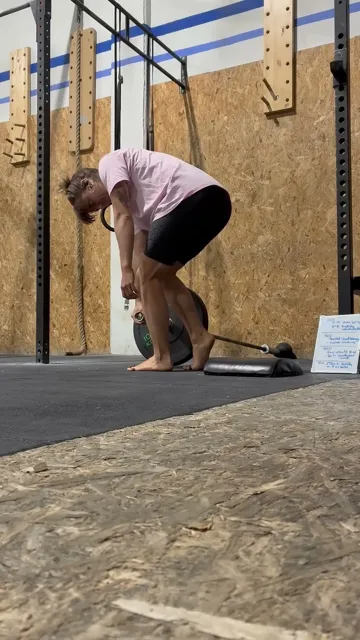
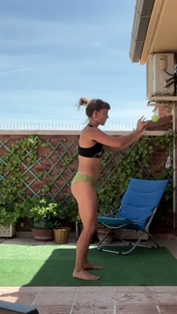
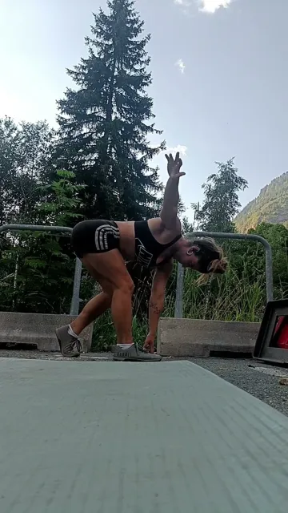

Las expresiones básicas se entrenan
Un entreno para que respirar y caminar mejor empiece a integrarse en tu cuerpo de forma automática.
Descargar la sesión en PDF🌬️Respirar
🚶♀️Caminar
Un entreno para que respirar y caminar mejor empiece a integrarse en tu cuerpo de forma automática.
Descargar la sesión en PDFRespirar y caminar son las dos expresiones que más repite tu cuerpo a lo largo del día. Y de cómo las hagas depende cómo te mueves en todo lo demás. Mejorar tu respiración y tu patrón de marcha (cómo te sostienes y te estabilizas al moverte) es una de las formas más potentes de mejorar tu suelo pélvico.
Conecta con tu patrón respiratorio, activa tu CALP y prepara el sistema para moverse mejor.
Integras la respiración con el movimiento, sobre todo con el patrón de marcha.
Un bloque más dinámico: sigues fortaleciendo, pero de forma más consciente y funcional.
Elige cuántas rondas vas a hacer y dónde entrenas. Después, marca cada serie al terminarla.
Activación a través de la respiración

Seated medball breathing hug
Sentada, pies apoyados y paralelos, con la pelota contra el pecho. Abrázala fuerte y enróllate sobre ella: el esternón y las costillas de delante se cierran suavemente mientras la espalda se redondea. Cuello y hombros relajados, mirada hacia abajo sin tensar. Inhala por la nariz, amplio y silencioso, hacia la zona posterior y lateral de tus costillas. Exhala por la boca, largo y suave, dejando que las costillas bajen.

Breath-guided segmental Jefferson curl
De pie, pies al ancho de cadera, rodillas desbloqueadas y brazos relajados delante. Inhala por la nariz manteniendo la posición. Al exhalar por la boca, enrolla la columna vértebra a vértebra, pero solo un pequeño segmento por exhalación. Pausa con cada inhalación y avanza un poco más en la siguiente. Imagina que troceas el descenso en pasos diminutos: la parte delantera del tronco se cierra y la de atrás se alarga. La pelvis va ligeramente hacia atrás como consecuencia de la bajada, no antes de tiempo, y siempre con las rodillas desbloqueadas.

Supine band pulldown with foam roller squeeze
Asegúrate de que tu zona lumbar toca el suelo todo el rato; ese contacto aumenta con la exhalación. En ella, tira de la banda hacia tus rodillas, alargándola lo máximo posible. Pon el foco también en apretar fuerte el foam roller, el balón o el taco de yoga.
Respiración con movimiento y movilidad de la pelvis

Wall 90º pelvic tilt with marching
Pies apoyados y piernas a 90º. En esa posición, lleva el ombligo y la zona lumbar al suelo y, sin perderla, eleva la cadera. Con un foam roller entre las rodillas, alterna: sube una rodilla y luego la otra, manteniéndolo. Si se te mueve es normal: lo recolocas y ya está.

Bottoms up split squat to cross connect
Pon el foco en mantener el apoyo en la parte interna del talón y en el dedo gordo. Exhala al subir e inhala al bajar. Busca la línea media al subir, controlando el movimiento.
Fuerza + patrón de marcha

Landmine march press
Busca comprimir un lado de la caja torácica mientras expandes el contrario: «clavas el codo» para comprimir y lo elevas para expandir. Que el movimiento venga de la pelvis, sin que las rodillas se vayan hacia dentro. Si puedes, fuerza una exhalación al empujar la barra. Grabarte te ayuda a ver cómo se comporta tu caja torácica.

Kickstand DL landmine
Pies separados en una zancada muy larga. El 95% del peso va en la pierna de delante; la otra solo apoya. Evita hiperextender la zona lumbar: mantén una posición de stack (ligera retroversión pélvica) que la aplane o le dé cierta curvatura, como en el vídeo, durante todo el ejercicio.

Contralateral static reach with tennis ball
Lo hacemos como trabajo de patrón de marcha: a medida que domines coger la pelota, busca movimiento en la caja torácica exagerando el «alargo brazo, comprimo brazo» mientras un lado gira hacia un lado y hacia el otro. Busca esa rotación, aunque el foco esté en la pelota. Pies paralelos y rodillas desbloqueadas.

Kickstand RDL bodyweight
Pies separados en una zancada muy larga, con el 95% del peso en la pierna de delante. Evita hiperextender la zona lumbar: mantén una posición de stack (ligera retroversión pélvica). Desbloquea ligeramente las rodillas al principio y no las flexiones más allá de ese punto. Es un trabajo estabilizador.

Entrenadora especializada en mujer y entrenamiento de fuerza. Mi misión es ayudar a las mujeres a entrenar respetando su biología, rompiendo miedos y adaptando el entrenamiento a su realidad psicosocial.
El deporte está diseñado principalmente por y para hombres, y deja fuera muchas de nuestras necesidades, entre ellas abordar las disfunciones del conjunto abdominal-lumbar y suelo pélvico (CALP).
La información por sí sola no transforma, pero la consciencia sí. Ojalá esta sesión te haya hecho mirar con otros ojos el trabajo de tu suelo pélvico… y todo lo que implica para tu cuerpo.
Si este material te ha hecho pensar, si sientes que te representa, y si hasta ahora has entrenado como has podido pero quieres más herramientas… esto es solo el principio.
Si quieres ir a la raíz, individualizar tu entrenamiento y entender tu cuerpo de verdad, escríbeme:
«Estoy lista para integrar el CALP en mi entreno y en mi vida».
Porque no estás sola, y entrenar con seguridad y confianza sí es posible.
Un abrazo, Violeta Gil Pablo